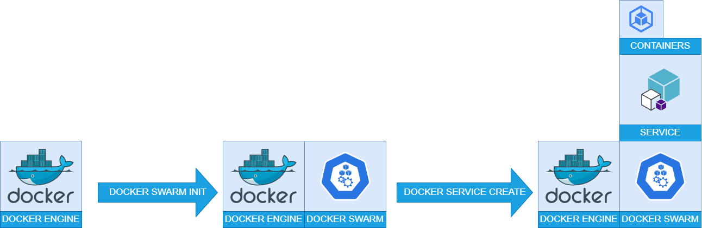

6. Container orchestration
Docker compose |
Docker Swarm |
|---|---|
Simple container orchestration |
cluster orchestration |
orchestration deployment tool it helps users deploying adhoc containers |
orchestration management tool for Docker applications, it helps users in setting up and deploying a Docker node cluster |
build tool that lets you define and configure a group of related containers |
manages multiple docker engines in a way that lets you treat them almost as a single unit. Swarm exposes an API that is mostly compatible with the Docker Remote API, which allows existing applications to use Swarm to scale horizontally without having to completely overhaul the existing interface to the container engine |
Docker Compose
With the help of Docker Compose, we define a group of containers to start up together with their runtime characteristics in a YAML file. Each of these containers is referred to as a “service” by Docker Compose. Which defines a “service” as a container that interacts with other containers(discoverable and available over a network) in some way and has particular runtime features.
Docker compose is packaged together with Docker Desktop.
PS C:\Users\windows_user> docker-compose --version
Docker Compose version v2.15.1
Here’s an example of a simple Flask application that writes a string to a Redis database:
Run in WSL:
# create a new virtual environment
python3 -m venv venv
# activate that virtual environment
. venv/bin/activate
# install dependencies
pip install flask
from flask import Flask
import redis
app = Flask(__name__)
# Connect to the Redis database
r = redis.Redis(host='localhost', port=6379)
@app.route('/write/<string:message>')
def write_to_redis(message):
# Write the message to the Redis database
r.set('message', message)
return "Message written to Redis: " + message
if __name__ == '__main__':
app.run(debug=True)
In this example, the application creates a route /write/<string:message> that takes a message as a parameter. When this route is accessed, the function write_to_redis is called and it writes the message to the Redis database using the set method, it also returns a string indicating that the message has been written to the Redis database.
The redis module is used to connect to the Redis database. In this example, it is assumed that the Redis database is running on the localhost at the default port 6379.
You can run this application by running the following command:
export FLASK_APP=app.py
flask run
You can test the application by accessing the route in your browser, for example, if you run the application on your localhost, you can test it by going to http://localhost:5000/write/hello
Here are some common methods for writing data to a Redis database, along with example code:
set(name, value): This method sets the value of a key in the Redis database.
import redis
r = redis.Redis(host='localhost', port=6379)
r.set('name', 'John Doe')
hset(name, key, value): This method sets the value of a field in a hash stored at key.
r.hset('person', 'name', 'John Doe')
r.hset('person', 'age', '30')
rpush(name, *values): This method appends one or multiple values to a list stored at key.
r.rpush('colors', 'red')
r.rpush('colors', 'green')
r.rpush('colors', 'blue')
sadd(name, *values): This method adds one or multiple members to a set stored at key.
r.sadd('fruits', 'apple')
r.sadd('fruits', 'banana')
r.sadd('fruits', 'orange')
RUN IN WSL
# switch to the sandbox directory
cd ~/sandbox/
# clone project from git using git clone in wsl or if you have it already git pull
git clone git@github.com:SKILLAB-DevOps/containers.git
# or
cd containers && git pull
# change the directory to the example
cd docker_examples/compose_flask
# open explorer to retrieve the wsl location
explorer.exe .
RUN IN POWERSHELL
cd WSL_LOCATION
# build the Dockerfile to get an image to be reused
docker build -t flask_redis .
# we can check the new image created using
docker images
# start the docker-compose
docker-compose up
# or
docker-compose up -d
Open another instance of Powershell:
# check the services
docker-compose ls
# check the logs
docker-compose logs
Docker Swarm
{kind=link}
Activating Docker Swarm
Make sure that Swarm is enabled on your Docker Desktop by typing in Powershell docker system info, and looking for a message Swarm: active.
If Swarm isn’t on, run docker swarm init in the Powershell to set it up.
To join a Docker Swarm cluster you run docker swarm join.
RUN IN POWERSHELL
# Enable
docker swarm init
# Disable
docker swarm leave
# Error response from daemon: You are attempting to leave the swarm on a node that is participating as a manager. Removing the last manager erases all current state of the swarm. Use `--force` to ignore this message.
docker swarm leave --force
# deploy a new service
docker stack deploy flaskapp -c docker-compose.yml
# check the stack
docker stack ls
# check the services
docker service ls
# check the logs of the
docker service logs flaskapp_web